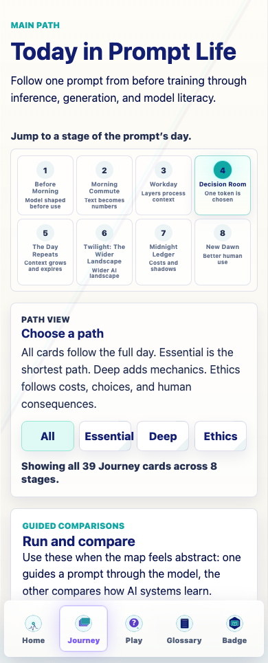
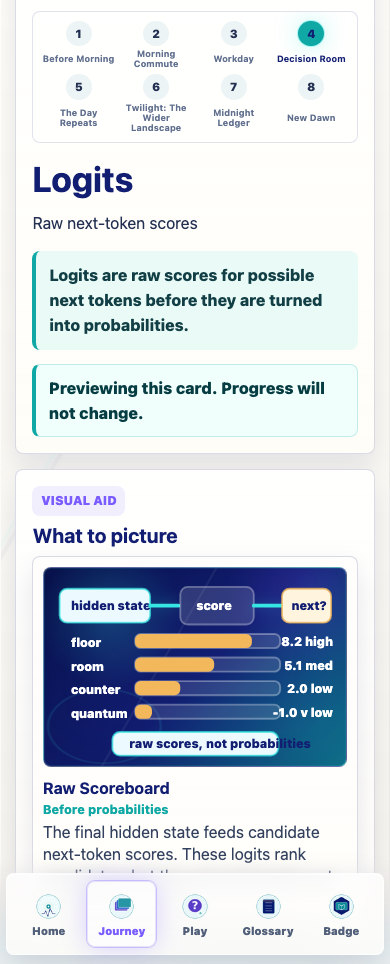
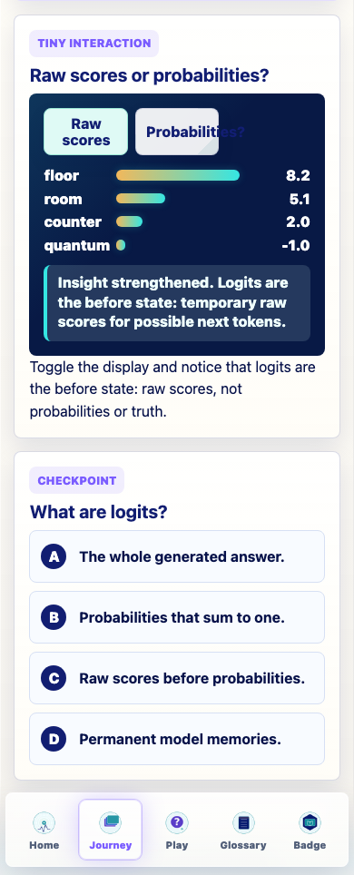
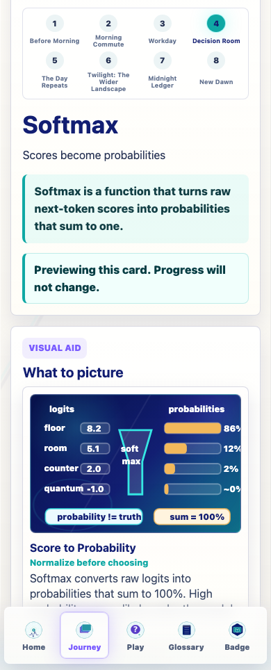
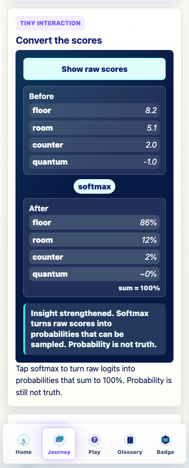
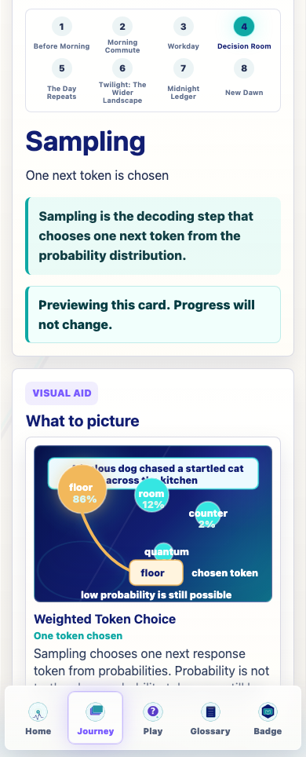
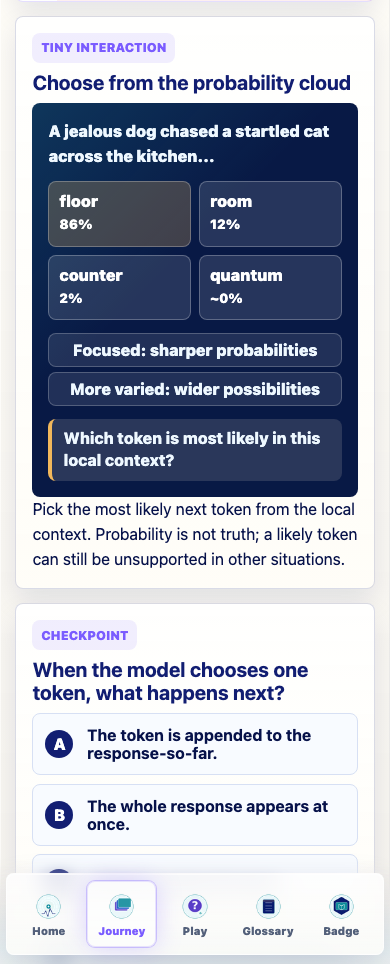
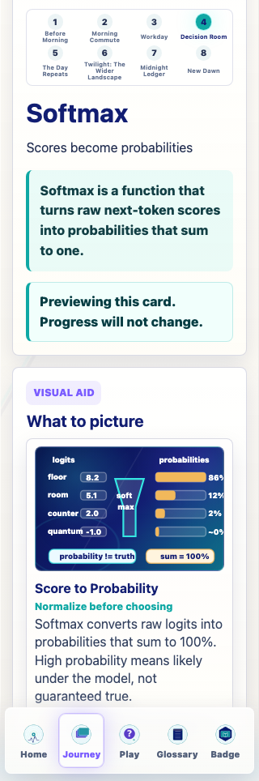
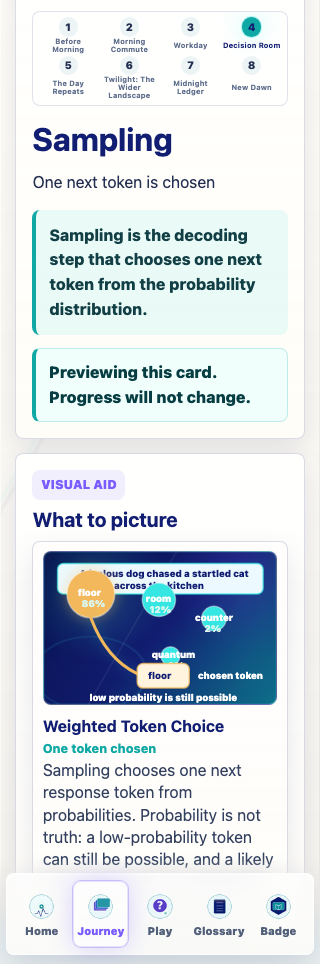
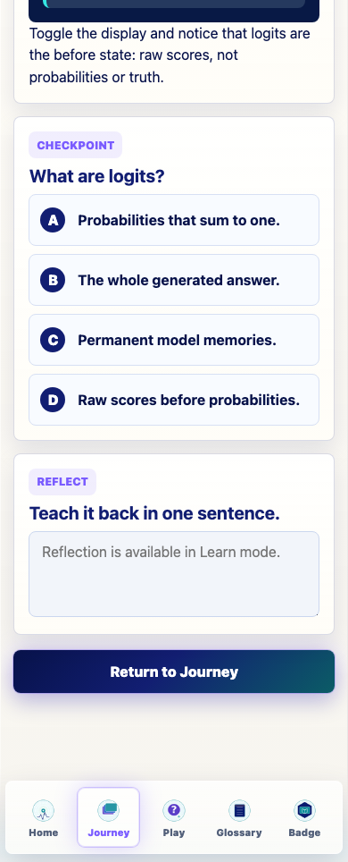

Prompt Life
v0.21.2 Decision Room Implementation Report
Date: 2026-06-06
This pass upgrades the existing Logits, Softmax, and Sampling Journey cards while keeping Journey order, progress rules, checkpoint randomization, games, dependencies, generated assets, and the one-badge model unchanged.
What Changed
- Bumped the visible app version to
0.21.2. - Converted Logits, Softmax, and Sampling to the richer lesson architecture.
- Added lifecycle, durable-vs-temporary, prompt-vs-response, misconception, relationship, and feedback copy.
- Replaced the older Decision Room visuals with coded SVG/HTML diagrams.
- Added dedicated tiny interactions:
logits-raw-toggle,softmax-convert, andsampling-probability-pick. - Updated glossary support for Decision Room terms including probability, decoding step, next token, temperature, top-k, and top-p.
Verification
The existing Vite large-chunk warning remains. Screenshot QA at 320px and 390px reported no horizontal overflow.
Card Improvements
Logits
Logits are taught as raw candidate next-token scores from the final hidden state, before probabilities and before choosing. The card now explicitly says logits are not probabilities, permanent memories, or truth scores.
Softmax
Softmax is taught as the conversion from raw scores to probabilities that sum to one. The card repeats that high probability means likely under the model, not guaranteed true.
Sampling
Sampling is taught as the decoding step that chooses one generated token from probabilities. The chosen token is appended before the model runs again, and probability is not truth.
Screenshots










Readiness
No Image 2 asset is recommended for Decision Room. The coded visuals are the right format because the exact labels, scores, probabilities, and truth-boundary language need to remain accessible. Before Morning, Morning Commute, Workday, and Decision Room are ready enough for the next stage audit/implementation pass: The Day Repeats.